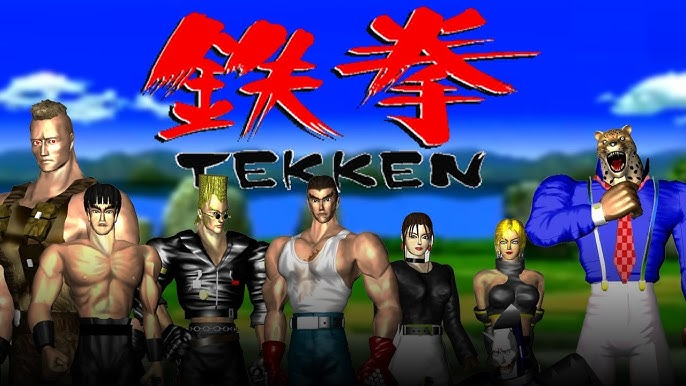

Date: 1994-12-09
Title: Tekken 1
Summary: The first game in the Tekken series that introduced 3D fighting mechanics and the Mishima storyline.
Categories: Arcade, Classic
Type: Game Files
File Size: ~500 MB
Format: ISO / ROM
Region: Japan / USA / Europe
Platform: Arcade / PS1
Tekken 1 is the game that started the legendary fighting franchise. Released in arcades in 1994 and later on PlayStation, it introduced players to the King of Iron Fist Tournament and iconic characters like Kazuya Mishima, Paul Phoenix, and Nina Williams. The game featured early 3D graphics and laid the foundation for future Tekken titles.
Note: Support Original Game By buying Official CD of Tekken 1. --Tekken 1 Can be Played By either a real Ps1 or By Ps1 Emulatores via Pc. Download